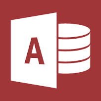

MICROSOFT ACCESS DATABASE

Create custom apps fast without being a developer*
Beyond desktop databases
Access is now much more than a way to create desktop databases.
It’s an easy-to-use tool for quickly creating browser-based database
applications that help you run your business. Your data is automatically
stored in a SQL database, so it’s more secure than ever, and you can
easily share your applications with colleagues.
App templates
Easily get started by creating a custom app or get inspired by a collection
of new and professionally designed app templates.
Table templates
Know what you would like to track with your custom app?
Simply start typing it in the “Add tables” textbox and then choose from
relevant tables to quickly define fields, relationships, and rules between
them. You will have a new app running in minutes!
MS Access Support Link :
SUPPORT
Link to MicroSoft Home :
PRODUCTS